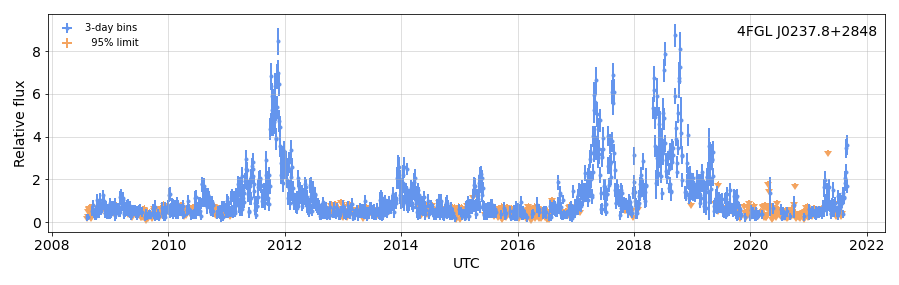
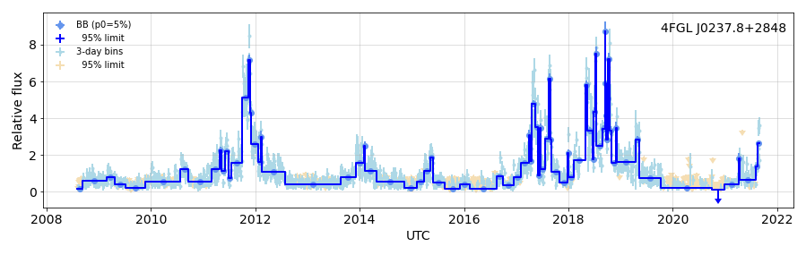
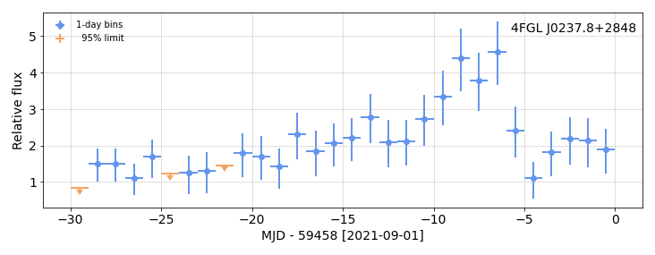

---

title: Presentation to the Fermi Collaboration


keywords: fastai
sidebar: home_sidebar

summary: "Prepared for presentation to the Fermi-LAT Autumn 2011 collaboration meeting, to follow a time-based weighted likelihood presentation by M. Kerr."
description: "Prepared for presentation to the Fermi-LAT Autumn 2011 collaboration meeting, to follow a time-based weighted likelihood presentation by M. Kerr."
nb_path: "nbs/99_presentation.ipynb"
---
<!--

#################################################
### THIS FILE WAS AUTOGENERATED! DO NOT EDIT! ###
#################################################
# file to edit: nbs/99_presentation.ipynb
# command to build the docs after a change: nbdev_build_docs

-->

<div class="container" id="notebook-container">
        
    {% raw %}
    
<div class="cell border-box-sizing code_cell rendered">

</div>
    {% endraw %}

<div class="cell border-box-sizing text_cell rendered"><div class="inner_cell">
<div class="text_cell_render border-box-sizing rendered_html">
<h2 id="Introduction-to-wtlike">Introduction to wtlike<a class="anchor-link" href="#Introduction-to-wtlike"> </a></h2><p>The <code>wtlike</code> package applies the 
<a href="https://arxiv.org/pdf/1910.00140.pdf">Kerr weighted likelihood</a> to <em>Fermi</em> photon data. It is available on <a href="https://pypi.org/project/wtlike/">PyPI</a> and <a href="https://github.com/tburnett/wtlike">github</a>, is purely in python with no dependency on Fermi-LAT code.</p>
<p>I'd like to express appreciation to Kent Wood, for being a tester and providing many useful suggestions.</p>
<h4 id="Quickly-generate-light-curves">Quickly generate light curves<a class="anchor-link" href="#Quickly-generate-light-curves"> </a></h4><p>Within 10 min, one can generate the full light curve for any source on any time scale, optionaly performing a Bayesian Block analysis.</p>
<p>Thus, as shown here, one can:</p>
<ul>
<li>Extend the Light Curve Repository</li>
</ul>
<p>Other Potential applications</p>
<ul>
<li>Reproduce the entire LCR</li>
<li>Evaluate variability for all sources with Bayesian Blocks</li>
<li>Periodically monitor a set of sources for recent flaring activity</li>
<li>Detect and make light curves of unassociated flares from FAVA</li>
<li>with timing solutions, provide lists of weighted photons for pulsar timing</li>
</ul>
<p>I now demonstrate how to reproduce and extend any source in the Light Curve Repository (LCR)</p>

</div>
</div>
</div>
    {% raw %}
    
<div class="cell border-box-sizing code_cell rendered">
<details class="description">
      <summary data-open="Hide Code" data-close="Show Code"></summary>
        <summary></summary>
        <div class="input">

<div class="inner_cell">
    <div class="input_area">
<div class=" highlight hl-ipython3"><pre><span></span><span class="k">def</span> <span class="nf">lcr_about</span><span class="p">():</span>
    <span class="sd">&quot;&quot;&quot;</span>
<span class="sd">    ## The Light Curve Repository &quot;about&quot; example</span>

<span class="sd">    I&#39;ll use this strong, active source as an example for a simple comparison.</span>
<span class="sd">    Here is the 4FGL source 4FGL J0237.8+2848 (associated with 4C 28.07), as shown on the [LCR &quot;about&quot; page](https://fermi.gsfc.nasa.gov/ssc/data/access/lat/LightCurveRepository/about.html)</span>

<span class="sd">    {img}</span>

<span class="sd">    This shows 3-day bins through Sep 28 2020. </span>
<span class="sd">    &quot;&quot;&quot;</span>
    <span class="n">img</span><span class="o">=</span><span class="n">image</span><span class="p">(</span><span class="s1">&#39;LCR_about_fig2.png&#39;</span><span class="p">,</span> <span class="n">caption</span><span class="o">=</span><span class="kc">None</span><span class="p">,</span> <span class="n">width</span><span class="o">=</span><span class="mi">600</span><span class="p">)</span>
    <span class="k">return</span> <span class="nb">locals</span><span class="p">()</span>

<span class="n">nbdoc</span><span class="p">(</span><span class="n">lcr_about</span><span class="p">)</span>
</pre></div>

    </div>
</div>
</div>

    </details>
<div class="output_wrapper">
<div class="output">

<div class="output_area">


<div class="output_markdown rendered_html output_subarea ">
<h2 id="The-Light-Curve-Repository-&quot;about&quot;-example">The Light Curve Repository "about" example<a class="anchor-link" href="#The-Light-Curve-Repository-&quot;about&quot;-example"> </a></h2><p>I'll use this strong, active source as an example for a simple comparison.
Here is the 4FGL source 4FGL J0237.8+2848 (associated with 4C 28.07), as shown on the <a href="https://fermi.gsfc.nasa.gov/ssc/data/access/lat/LightCurveRepository/about.html">LCR "about" page</a></p>
<figure style="margin-left: 5%" title="Figure 1">  <a href="images/lcr_about_fig_01.png" title="images/lcr_about_fig_01.png">       </a> </figure><p>This shows 3-day bins through Sep 28 2020.</p>

</div>

</div>

</div>
</div>

</div>
    {% endraw %}

    {% raw %}
    
<div class="cell border-box-sizing code_cell rendered">
<details class="description">
      <summary data-open="Hide Code" data-close="Show Code"></summary>
        <summary></summary>
        <div class="input">

<div class="inner_cell">
    <div class="input_area">
<div class=" highlight hl-ipython3"><pre><span></span><span class="k">def</span> <span class="nf">lcr_about_example</span><span class="p">(</span><span class="n">fig_width</span><span class="o">=</span><span class="mi">600</span><span class="p">):</span>
    <span class="sd">&quot;&quot;&quot;</span>
<span class="sd">    ## The same source with wtlike</span>
<span class="sd">    &lt;p style=&quot;text-align:right; &quot;&gt;wtlike version {__version__}&lt;br&gt;{date}&lt;/p&gt;</span>
<span class="sd">    </span>
<span class="sd">    ### The result</span>
<span class="sd">    {fig1}</span>
<span class="sd">    </span>
<span class="sd">    What did that take?</span>
<span class="sd">    #### Set up the source ...</span>
<span class="sd">    </span>
<span class="sd">    The only code, perhaps in a Jupyterlab cell, needed to set up the source for plots is: </span>

<span class="sd">    ```</span>
<span class="sd">        from wtlike import *</span>
<span class="sd">        wtl = WtLike(&#39;4FGL J0237.8+2848&#39;, time_bins=(0,0,3))</span>
<span class="sd">    ```  </span>
<span class="sd">    &lt;br&gt;</span>
<span class="sd">    {print1}</span>
<span class="sd">    </span>
<span class="sd">    This creates an instance, `wtl`, of the class `WtLike`, specifying a source name, with 3-day (default is 7) time bins for the full data set.</span>
<span class="sd">    The name can be that of any source known to `astropy` which is closer than $0.1^\circ$ to a 4FGL-DR3 or uw1216 source.</span>
<span class="sd">    Thus specifying instead the associated 4C 28.07 would have worked.</span>
<span class="sd">    #### ... and make the plot</span>
<span class="sd">    Then, instructing the object to plot itself with the statement</span>
<span class="sd">    </span>
<span class="sd">    ```</span>
<span class="sd">        wtl.plot()</span>
<span class="sd">    ```</span>
<span class="sd">    </span>
<span class="sd">    generates the light curve plot shown above. </span>
<span class="sd">      </span>
<span class="sd">    ### Apply Bayesian blocks </span>
<span class="sd">    To partion the 3-day intervals, or cells, using Bayesian Blocks use another function member of the class `WtLike`. The </span>
<span class="sd">    statements </span>
<span class="sd">    </span>
<span class="sd">    ```</span>
<span class="sd">        bb = wtl.bb_view()</span>
<span class="sd">        bb.plot()</span>
<span class="sd">    ```</span>
<span class="sd">    &lt;br&lt;</span>
<span class="sd">    define a new *instance* of `WtLike`, using the current 3-day likelihood fits.</span>
<span class="sd">    This instance has a different `plot()`, which makes an overlay showing the BB partitions, each with a new fit. </span>
<span class="sd">    {print2}</span>
<span class="sd">    {fig2}</span>
<span class="sd">    </span>
<span class="sd">    ### Check that recent flare</span>
<span class="sd">    The flaring behavior at the end of the interval prompts exploration. We use the `view()` function to return another </span>
<span class="sd">    copy of the original `wtl`, but with different binning, and ask it to make a plot of the last 30 days, via</span>
<span class="sd">    </span>
<span class="sd">    ```</span>
<span class="sd">        recent = wtl.view(-30,0,1)</span>
<span class="sd">        recent.plot()</span>
<span class="sd">    ```</span>
<span class="sd">    &lt;br&gt;</span>
<span class="sd">    {print3}</span>
<span class="sd">    {fig3}</span>
<span class="sd">    </span>
<span class="sd">    &quot;&quot;&quot;</span>
    <span class="kn">from</span> <span class="nn">wtlike</span> <span class="kn">import</span> <span class="n">__version__</span>
    <span class="k">with</span> <span class="n">capture</span><span class="p">(</span><span class="s1">&#39;Source setup output: Load data, create and fit bins&#39;</span><span class="p">,</span> <span class="nb">open</span><span class="o">=</span><span class="kc">False</span><span class="p">)</span> <span class="k">as</span> <span class="n">print1</span><span class="p">:</span>
        <span class="k">with</span> <span class="n">Timer</span><span class="p">()</span> <span class="k">as</span> <span class="n">t</span><span class="p">:</span>
            <span class="n">wtl</span> <span class="o">=</span> <span class="n">WtLike</span><span class="p">(</span><span class="s1">&#39;4FGL J0237.8+2848&#39;</span><span class="p">,</span> <span class="n">time_bins</span><span class="o">=</span><span class="p">(</span><span class="mi">0</span><span class="p">,</span><span class="mi">0</span><span class="p">,</span><span class="mi">3</span><span class="p">),</span> <span class="n">clear</span><span class="o">=</span><span class="n">clear</span><span class="p">)</span>
        <span class="nb">print</span><span class="p">(</span><span class="n">t</span><span class="p">)</span>
    <span class="n">fig1</span> <span class="o">=</span> <span class="n">figure</span><span class="p">(</span>
        <span class="n">wtl</span><span class="o">.</span><span class="n">plot</span><span class="p">(</span><span class="n">UTC</span><span class="o">=</span><span class="kc">True</span><span class="p">,</span><span class="n">figsize</span><span class="o">=</span><span class="p">(</span><span class="mi">15</span><span class="p">,</span><span class="mi">4</span><span class="p">),</span> <span class="n">fignum</span><span class="o">=</span><span class="mi">1</span><span class="p">),</span>
        <span class="n">width</span><span class="o">=</span><span class="n">fig_width</span><span class="p">)</span>
    
    <span class="k">with</span> <span class="n">capture</span><span class="p">(</span><span class="s1">&#39;Bayesian block analysis output&#39;</span><span class="p">,</span> <span class="p">)</span> <span class="k">as</span> <span class="n">print2</span><span class="p">:</span>
        <span class="k">with</span> <span class="n">Timer</span><span class="p">()</span> <span class="k">as</span> <span class="n">t</span><span class="p">:</span>
            <span class="n">bb</span> <span class="o">=</span> <span class="n">wtl</span><span class="o">.</span><span class="n">bb_view</span><span class="p">()</span>
        <span class="nb">print</span><span class="p">(</span><span class="n">t</span><span class="p">)</span>
    <span class="n">fig2</span><span class="o">=</span> <span class="n">figure</span><span class="p">(</span><span class="n">bb</span><span class="o">.</span><span class="n">plot</span><span class="p">(</span><span class="n">UTC</span><span class="o">=</span><span class="kc">True</span><span class="p">,</span><span class="n">figsize</span><span class="o">=</span><span class="p">(</span><span class="mi">15</span><span class="p">,</span><span class="mi">4</span><span class="p">),</span> <span class="n">fignum</span><span class="o">=</span><span class="mi">2</span><span class="p">),</span> <span class="n">width</span><span class="o">=</span><span class="n">fig_width</span><span class="p">);</span>
    
    <span class="k">with</span> <span class="n">capture</span><span class="p">(</span><span class="s1">&#39;Rebinning output&#39;</span><span class="p">)</span> <span class="k">as</span> <span class="n">print3</span><span class="p">:</span>
        <span class="n">recent</span> <span class="o">=</span> <span class="n">wtl</span><span class="o">.</span><span class="n">view</span><span class="p">(</span><span class="o">-</span><span class="mi">30</span><span class="p">,</span><span class="mi">0</span><span class="p">,</span><span class="mi">1</span><span class="p">)</span>
    
    <span class="n">fig3</span><span class="o">=</span><span class="n">figure</span><span class="p">(</span><span class="n">recent</span><span class="o">.</span><span class="n">plot</span><span class="p">(</span><span class="n">tzero</span><span class="o">=</span><span class="nb">round</span><span class="p">(</span><span class="n">wtl</span><span class="o">.</span><span class="n">stop</span><span class="p">),</span> <span class="n">fignum</span><span class="o">=</span><span class="mi">3</span><span class="p">),</span> <span class="n">width</span><span class="o">=</span><span class="n">fig_width</span><span class="p">)</span>
    <span class="nb">print</span><span class="p">(</span><span class="s1">&#39; &#39;</span><span class="p">)</span>  <span class="c1"># seems needed to get nbdev to generate the doc?  </span>
    <span class="k">return</span> <span class="nb">locals</span><span class="p">()</span>
    
<span class="n">nbdoc</span><span class="p">(</span><span class="n">lcr_about_example</span><span class="p">)</span>
        
</pre></div>

    </div>
</div>
</div>

    </details>
<div class="output_wrapper">
<div class="output">

<div class="output_area">

<div class="output_subarea output_stream output_stdout output_text">
<pre> 
</pre>
</div>
</div>

<div class="output_area">


<div class="output_markdown rendered_html output_subarea ">
<h2 id="The-same-source-with-wtlike">The same source with wtlike<a class="anchor-link" href="#The-same-source-with-wtlike"> </a></h2><p style="text-align:right; ">wtlike version 0.3.10<br>2021-09-11 07:17</p><h3 id="The-result">The result<a class="anchor-link" href="#The-result"> </a></h3><figure style="margin-left: 5%" title="Figure 1">  <a href="images/lcr_about_example_fig_01.png" title="images/lcr_about_example_fig_01.png">       </a> </figure><p>What did that take?</p>
<h4 id="Set-up-the-source-...">Set up the source ...<a class="anchor-link" href="#Set-up-the-source-..."> </a></h4><p>The only code, perhaps in a Jupyterlab cell, needed to set up the source for plots is:</p>

<pre><code>    from wtlike import *
    wtl = WtLike('4FGL J0237.8+2848', time_bins=(0,0,3))</code></pre>
<p><br></p>
<p><details  class="nbdoc-description" >  <summary> Source setup output: Load data, create and fit bins </summary>  <div style="margin-left: 5%;"><pre>SourceData:  4FGL J0237.8+2848: Saving to cache with key "P88Y0643_data"<br>LoadData: loading all 684 weekly files<br>  Processing 684 week files, using 4 processes <br><br>SourceData: Source 4FGL J0237.8+2848 with:<br>  data:       123,711 photons from 2008-08-04 to 2021-09-11<br>   exposure: 3,204,725 intervals,  average effective area 3024 cm^2 for 95.8 Ms<br>    rates:  source 1.19e-07/s, background 3.08e-07/s, S/N ratio 3.86e-01<br>CellData: Bin photon data into 1595 3-day bins from 54683.0 to 59468.0<br>LightCurve: select 1551 cells for fitting with e&gt;15 & n&gt;2<br>elapsed time: 651.9s (10.9 min)<br></pre></div> </details></p>
<p>This creates an instance, <code>wtl</code>, of the class <code>WtLike</code>, specifying a source name, with 3-day (default is 7) time bins for the full data set.
The name can be that of any source known to <code>astropy</code> which is closer than $0.1^\circ$ to a 4FGL-DR3 or uw1216 source.
Thus specifying instead the associated 4C 28.07 would have worked.</p>
<h4 id="...-and-make-the-plot">... and make the plot<a class="anchor-link" href="#...-and-make-the-plot"> </a></h4><p>Then, instructing the object to plot itself with the statement</p>

<pre><code>    wtl.plot()</code></pre>
<p>generates the light curve plot shown above.</p>
<h3 id="Apply-Bayesian-blocks">Apply Bayesian blocks<a class="anchor-link" href="#Apply-Bayesian-blocks"> </a></h3><p>To partion the 3-day intervals, or cells, using Bayesian Blocks use another function member of the class <code>WtLike</code>. The 
statements</p>

<pre><code>    bb = wtl.bb_view()
    bb.plot()</code></pre>
<p>&lt;br&lt;
define a new <em>instance</em> of <code>WtLike</code>, using the current 3-day likelihood fits.
This instance has a different <code>plot()</code>, which makes an overlay showing the BB partitions, each with a new fit.</p>
<p><details  class="nbdoc-description" >  <summary> Bayesian block analysis output </summary>  <div style="margin-left: 5%;"><pre>Bayesian Blocks: partitioning 1551 cells using LikelihoodFitness with penalty 5%<br> found 81 / 1551 blocks.<br>LightCurve: Loaded 81 / 81 cells for fitting<br>elapsed time: 78.6s (1.3 min)<br></pre></div> </details></p>
<figure style="margin-left: 5%" title="Figure 2">  <a href="images/lcr_about_example_fig_02.png" title="images/lcr_about_example_fig_02.png">       </a> </figure><h3 id="Check-that-recent-flare">Check that recent flare<a class="anchor-link" href="#Check-that-recent-flare"> </a></h3><p>The flaring behavior at the end of the interval prompts exploration. We use the <code>view()</code> function to return another 
copy of the original <code>wtl</code>, but with different binning, and ask it to make a plot of the last 30 days, via</p>

<pre><code>    recent = wtl.view(-30,0,1)
    recent.plot()</code></pre>
<p><br></p>
<p><details  class="nbdoc-description" >  <summary> Rebinning output </summary>  <div style="margin-left: 5%;"><pre>CellData: Bin photon data into 30 1-day bins from 59438.0 to 59468.0<br>LightCurve: select 29 cells for fitting with e&gt;5 & n&gt;2<br></pre></div> </details></p>
<figure style="margin-left: 5%" title="Figure 3">  <a href="images/lcr_about_example_fig_03.png" title="images/lcr_about_example_fig_03.png">       </a> </figure>
</div>

</div>

</div>
</div>

</div>
    {% endraw %}

<div class="cell border-box-sizing text_cell rendered"><div class="inner_cell">
<div class="text_cell_render border-box-sizing rendered_html">
<h4 id="So-what-do-you-need-in-order-to-do-this?">So what do you need in order to do this?<a class="anchor-link" href="#So-what-do-you-need-in-order-to-do-this?"> </a></h4><ul>
<li>Install with <code>pip install wtlike</code></li>
<li>create a file <code>~/.config/wtlike/config.yaml</code> like the one at <code>/nfs/farm/g/glast/burnett</code></li>
<li>Make a link to, or get a copy of the 3 GB at <code>/nfs/farm/g/glast/u/burnett/wtlike_data</code> </li>
</ul>

</div>
</div>
</div>
    {% raw %}
    
<div class="cell border-box-sizing code_cell rendered">
<details class="description">
      <summary data-open="Hide Code" data-close="Show Code"></summary>
        <summary></summary>
        <div class="input">

<div class="inner_cell">
    <div class="input_area">
<div class=" highlight hl-ipython3"><pre><span></span><span class="k">def</span> <span class="nf">show_dataflow</span><span class="p">():</span>
    <span class="sd">&quot;&quot;&quot;</span>
<span class="sd">    ### How does it work?</span>
<span class="sd">    #### Data flow diagram</span>
<span class="sd">    {img}</span>
<span class="sd">    &quot;&quot;&quot;</span>
    <span class="n">img</span> <span class="o">=</span> <span class="n">image</span><span class="p">(</span><span class="s1">&#39;wtlike_dataflow.png&#39;</span><span class="p">,</span> <span class="n">width</span><span class="o">=</span><span class="mi">600</span><span class="p">,</span> <span class="n">caption</span><span class="o">=</span><span class="kc">None</span><span class="p">)</span>
    <span class="k">return</span> <span class="nb">locals</span><span class="p">()</span>
<span class="n">nbdoc</span><span class="p">(</span><span class="n">show_dataflow</span><span class="p">)</span>
</pre></div>

    </div>
</div>
</div>

    </details>
<div class="output_wrapper">
<div class="output">

<div class="output_area">


<div class="output_markdown rendered_html output_subarea ">
<h3 id="How-does-it-work?">How does it work?<a class="anchor-link" href="#How-does-it-work?"> </a></h3><h4 id="Data-flow-diagram">Data flow diagram<a class="anchor-link" href="#Data-flow-diagram"> </a></h4><figure style="margin-left: 5%" title="Figure 1">  <a href="images/show_dataflow_fig_01.png" title="images/show_dataflow_fig_01.png">       </a> </figure>
</div>

</div>

</div>
</div>

</div>
    {% endraw %}

<div class="cell border-box-sizing text_cell rendered"><div class="inner_cell">
<div class="text_cell_render border-box-sizing rendered_html">
<p>There are some important features</p>
<ul>
<li><p>Weights assigned via a table  <br>
Allows sepation of the procesees that evaluates the weight from assignment to an individual photon.</p>
</li>
<li><p>Photons and livetime info for any direction are taken from a compact version of the full FT1/FT2 set of files.<br>
This makes the system very portable, with &lt;3GB needed, with no need for the full <code>fermipy</code> package, and much faster to start a source, and especially to generate a new binning.</p>
</li>
</ul>
<ul>
<li><p>Using a Poisson-like representation of the likelihood.<br>
It turns out that any likelihood evaluated with the Kerr formula, involving a lot of computation, can be safely approximated with a 3-parameter scaled Poisson function.<br> 
Thus the fits to individual cells are represented by the <em>likelihood function</em>, not just a limit or a 
value/uncertainty pair--these easily derived from the three parameters!</p>
</li>
<li><p>Exposure is calculated based on the energy and event type, rather than assuming a power-law.<br>
For count flux measurements, which are dominated by the lowest energies, this does not matter much, but it allows measurement of energy dependence, a future enhancement.</p>
</li>
</ul>
<h3 id="The-user-interface">The user interface<a class="anchor-link" href="#The-user-interface"> </a></h3><p><code>wtlike</code> is designed for, (but does not require) Jupyterlab notebooks, that is, to enhance interactivity. As this presentation 
shows, a basic light curve, can be done with a single line of code:</p>

<pre><code>WtLike('4C 28.07').plot()</code></pre>
<p>If the source in 
question is already in the cache managed by wtlike, this requires &lt;10s, otherwise ~10 min. Creating different <em>views</em>, with restricted time ranges or intervals, is simply done with the <code>view()</code> member function. Running a Bayesian Block analysis is performed with the function <code>bb_view()</code>.</p>

</div>
</div>
</div>
<div class="cell border-box-sizing text_cell rendered"><div class="inner_cell">
<div class="text_cell_render border-box-sizing rendered_html">
<h2 id="Caveats-and-(Current)-Limitations">Caveats and (Current) Limitations<a class="anchor-link" href="#Caveats-and-(Current)-Limitations"> </a></h2><h3 id="Problem-with-the-exposure-calculation?">Problem with the exposure calculation?<a class="anchor-link" href="#Problem-with-the-exposure-calculation?"> </a></h3><p>Kent finds, using autocorrelation, a significant precession period (~52 day) signal in some parts of the sky, especially the GC. This needs to be understood and corrected immediately. It does not seem to affect Geminga, with only a 4% systematic resolution degradation, or any of the pulsars that I have studied, however.</p>
<h3 id="Pointlike-rather-than-gtlike">Pointlike rather than gtlike<a class="anchor-link" href="#Pointlike-rather-than-gtlike"> </a></h3><p>The weights tables should be similar, but gtlike is the collaboration standard.</p>
<h3 id="Absolute-fluxes">Absolute fluxes<a class="anchor-link" href="#Absolute-fluxes"> </a></h3><p>The weighted likelihood provides <em>relative</em> count flux values vs. time, relative to the average flux for the full time interval. However, the weights were determined by the 12-year DR3 dataset.</p>
<h3 id="Nearby-variable-sources">Nearby variable sources<a class="anchor-link" href="#Nearby-variable-sources"> </a></h3><p>As pointed out in the  <a href="https://fermi.gsfc.nasa.gov/ssc/data/access/lat/LightCurveRepository/about.html">LCR "about" page</a>,
there are "15 other variable sources within a 12 deg radius". But in the case shown, the nearest variable source is $4.8^\circ $ away. A weak pulsar $4^\circ$ distant shows no effect.
Actually, another source has to be within a few degrees to have an impact. The Kerr scheme assumes that the background is constant, at most allowing for an overall rescaling which would not describe the effect of a nearby source.</p>
<p>However, given the position-dependent weight tables for both sources, each initally determined assuming the other is constant, allows a straight-forward modification for overlapping pixels. The dominant case, that
only one is varying at a time is easy. This a future project.</p>
<h3 id="GRBs-and-solar-flares">GRBs and solar flares<a class="anchor-link" href="#GRBs-and-solar-flares"> </a></h3><p>Could be locally masked out.</p>
<h3 id="Data-file-availability">Data file availability<a class="anchor-link" href="#Data-file-availability"> </a></h3><p>The 3 GB that are needed (which compress to a 2 GB zip file) need to have a publicly available place for distribution. Fermi collaboarators who have a SLAC account could access them via scp (they are at /afs/slac/g/glast/users/burnett/wtlike_data), but I want a public repository, ideally with a cron job to perform daily updates of the photon data.</p>
<h3 id="The-biggest-limitation">The biggest limitation<a class="anchor-link" href="#The-biggest-limitation"> </a></h3><details>
    <summary> is ... </summary>   
     <p style="text-align:center; font-size:24px; color:red;">There is only one (octogenarian) developer!</p>

</details><p><br></p>
<p>All the code is in <a href="https://github.com/tburnett/wtlike">github/tburnett/wtlike</a>, somewhat documented using the nbdev system.</p>

</div>
</div>
</div>
</div>
 

